Leaf Constructors
Leaf nodes are the terminal elements of a SpaceDesc tree. They represent concrete spaces (or absence of space) that composite combinators compose into larger designs. Every non-trivial design starts with these.
using KhepriBase
living = room(:living, :living_room, 5.0, 4.0) # 5×4 m living room
bedroom = room(:bed, :bedroom, 4.0, 3.0; height=3.0, # with custom height
props=(orientation=:south,)) # and free-form props
spacer = void(1.5, 0.0) # 1.5 m horizontal gap
shell = envelope(20.0, 12.0, 3.0; id=:floor_1) # 20×12 m shell, 3 m highA zero-sized void() is the identity for beside_x, beside_y, and above, so it can be dropped into a composition without affecting the result. A non-zero void(w, d) reserves space as a spacer.
Rooms of different sizes share the same constructor:

KhepriBase.room — Function
room(id, use, w, d; height=2.8, props=(;))Convenience constructor for Room. Converts dimensions to Float64.
KhepriBase.void — Function
void(w=0.0, d=0.0)Convenience constructor for Void. Defaults to zero-size empty space.
KhepriBase.envelope — Function
envelope(w, d, h; id=:envelope, props=(;))Convenience constructor for Envelope. Converts dimensions to Float64.
KhepriBase.polar_envelope — Function
polar_envelope(center, r_inner, r_outer, theta_start, theta_end, height;
id=:envelope, use=:envelope, props=(;), n_arc=16)Convenience constructor for PolarEnvelope. Converts numeric fields to Float64 and wraps center into a Loc if needed.